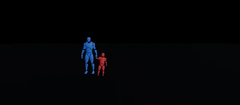
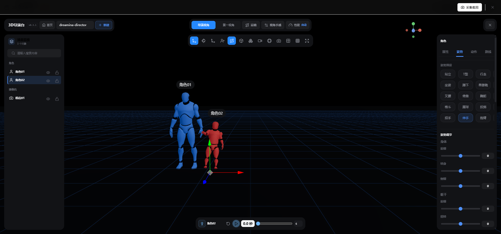

▲ 用导演台截图做参考帧生成的画面，构图和机位与设计时基本一致
AI 视频生成目前最大的瓶颈不是画质，是运镜可控性。
文生视频模式下，镜头语言基本靠猜。提示词写「镜头缓缓推近」，输出可能是全景俯拍；写「低角度仰拍」，给的是平视中景。这种偏差不是模型不够好，而是文字描述与三维空间构图之间存在一条天然的信息鸿沟。
图生视频能锁定首帧，但前提是你得先有一张构图正确的参考图——而这张图本身往往需要另一轮生成或绘制。问题被平移了，没有解决。
最近注意到一个叫「3D 导演台」的辅助工具，思路很直接：在一个 3D 场景中完成构图设计，然后将这个构图作为参考帧喂给视频生成模型。相当于把「文字描述构图」变成了「可视化的构图交付」。
1
信息鸿沟从哪来
视频生成模型对「镜头」的理解和人类不在一个坐标系里。
人类用「推拉摇移」描述镜头运动，基于的是物理摄影机的操作经验。模型没有这种经验——它学到的「推近」，是从大量视频中统计出来的画面变化模式，和你的意图可能匹配，也可能不匹配。这种不确定性在做叙事性内容时尤其致命，因为你需要的不是「差不多」，而是「就是这个镜头」。
3D 导演台的解法：把「描述」这个环节整个跳过。你在 3D 空间里放置角色、调整机位、确认构图，截下来的图就是你想要的画面——不需要任何翻译，模型直接看到你的意图。
2
操作流程拆解
入口。
在视频生成界面的参考图上传区旁，有一个场记板图标，点击后以全屏弹窗加载 3D 编辑器。它会跟随当前主题的亮暗风格，且自动保存工程状态。
场景搭建与镜头调度。
编辑器内置了角色模型、道具和背景元素。你可以调整角色的站位和姿势，拖拽摄像机控制远近与角度。低机位仰拍、俯拍全景、特写——所有镜头语言在编辑器里直接可见，而不是靠文字猜。

▲ 导演台界面：左侧放置角色和道具，中间实时预览构图，右侧调整摄像机参数
截图采集。
构图确认后，点击顶部的「采集截图」按钮，编辑器以 1080p 截取当前画面并自动回填到生成任务的参考帧位置。支持连续采集多张，批量回传。
整个过程不需要切换窗口或手动上传——从编辑器到生成任务的数据流是闭环的。
生成。
截图回来后，它就是你的参考帧了。你可以用首帧模式让它基于这张图开始生成，也可以用首尾帧模式卡住开头和结尾两张构图。提示词里写清楚运镜方向和氛围，比如「镜头缓慢推进，暖色调」，AI 就有了明确的构图基准。
点生成，等一段视频出炉。
3
几个值得注意的细节
参考帧的构图密度。导演台截出来是 1080p，清晰度没问题。但如果你把机位拉得太远，人物在画面里只有一小点，AI 拿到的构图参考意义就有限了。跟真实摄影一样，该给的视觉信息要给够。
多角度采集。同一个场景换不同角度各截一张，对比后选择最优构图。导演台支持连续采集，成本很低。
首尾帧组合用效果更好。如果你想要一段有镜头运动的视频，比如从远景推到特写，可以分别截一张全景和一张近景，用首尾帧模式让 AI 在两张之间补帧。比纯文字描述运镜靠谱得多。
离线也能用。导演台默认连的是在线版，但也支持改成自托管地址。如果你部署在内网环境，可以本地跑一个导演台服务，完全不依赖外网。
AI 视频生成的技术迭代很快，模型能力确实在持续提升。但一个容易被忽视的事实是：生成质量的天花板，越来越不取决于模型，而取决于「人怎么把自己脑子里的画面精确地传达给模型」。
文字描述有上限——你再怎么精确地写「低角度、浅景深、缓推」，模型的理解都会有偏差。这不是模型的错，是文字本身就是一种低带宽的视觉描述协议。
3D 导演台做的事情，就是把协议从文字换成图像。你看到什么，模型就参考什么。
这个工具来自一个叫 Open Dreamina 的开源项目，Apache 2.0 协议，支持 Docker 一键部署，数据全在本地。有需要的可以自取。
— END —